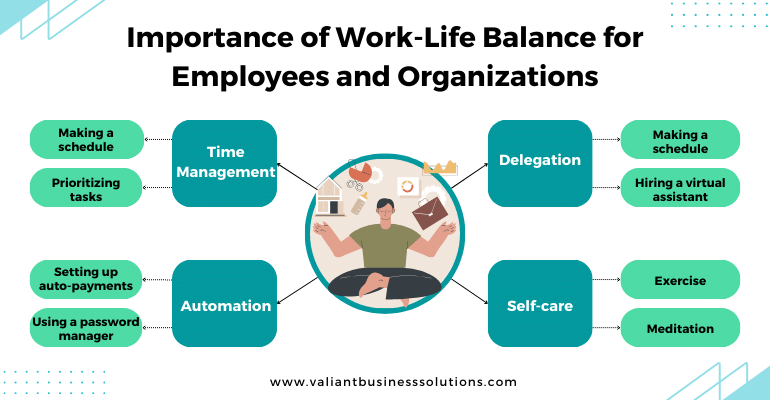

15 December
In today's work world, finding the right balance between work and life is super important. Valiant Business Solutions, known as one of the top
This balance is crucial because it affects many things that are important for employees like their health, happiness with their job, and how well they work. At the same time, it has a huge impact on things like how a company keeps its employees, the vibe or culture at work, and how competitive a company is in its industry. Let's take a closer look at why work-life balance matters so much for both people and companies in today's fast-paced workplaces.
recruitment agencies in India,
gets that this balance isn't just a passing trend. It's a big deal that affects both people and businesses in major ways.This balance is crucial because it affects many things that are important for employees like their health, happiness with their job, and how well they work. At the same time, it has a huge impact on things like how a company keeps its employees, the vibe or culture at work, and how competitive a company is in its industry. Let's take a closer look at why work-life balance matters so much for both people and companies in today's fast-paced workplaces.
For Employees:
- Health and Well-being: Prioritizing work-life balance is pivotal for maintaining physical and mental health. Chronic stress due to an imbalance between work and personal life can lead to adverse health effects. Striking a balance allows individuals to recharge, reducing stress levels, improving overall health, and fostering a sense of well-being.
- Increased Productivity and Efficiency: A harmonious work-life balance directly contributes to heightened productivity. When employees feel well-rested, satisfied, and fulfilled outside of work, they tend to bring higher levels of energy, focus, and efficiency to their professional roles.
- Enhanced Job Satisfaction: Employees who can manage their work commitments alongside personal responsibilities experience higher job satisfaction. This contentment services leads to a more engaged and motivated workforce, resulting in better performance and a positive impact on overall job satisfaction levels.
- Workforce Retention: Organizations that prioritize work-life balance tend to retain talent better. Employees are more likely to remain loyal to a company that supports their efforts in maintaining a balanced lifestyle, thereby reducing turnover rates and preserving institutional knowledge.
For Organizations:
- Attracting Top Talent: Emphasizing work-life balance during recruitment establishes Valiant Business Solutions as an employer of choice among the
best job placement consultancy in Pune.
This focus attracts high-quality candidates seeking a supportive work environment. - Enhanced Employee Retention: Companies fostering work-life balance witness increased employee loyalty. This results in higher retention rates, saving recruitment costs and allowing the organization to retain skilled and experienced employees.
- Positive Organizational Culture: Prioritizing
work-life balance
contributes significantly to fostering a positive organizational culture. It demonstrates that the organization values its employees' well-being, leading to higher morale, increased job satisfaction, and better teamwork. - Boosted Productivity and Innovation: A balanced life fuels creativity and innovation. Employees who can maintain a balance between work and personal life tend to be more engaged and bring fresh perspectives and ideas to the table, driving the organization forward.
Overall Impact:
- Reputation and Competitiveness: Organizations that prioritize work-life balance build a strong reputation, attracting both clients and top-tier talent. This enhances their competitiveness within the industry and positions them as leaders in employee-centric practices.
- Employee Engagement and Commitment: A balanced work-life structure leads to higher levels of employee engagement and commitment. Employees who feel supported in managing personal responsibilities alongside work obligations demonstrate greater dedication toward achieving organizational goals.